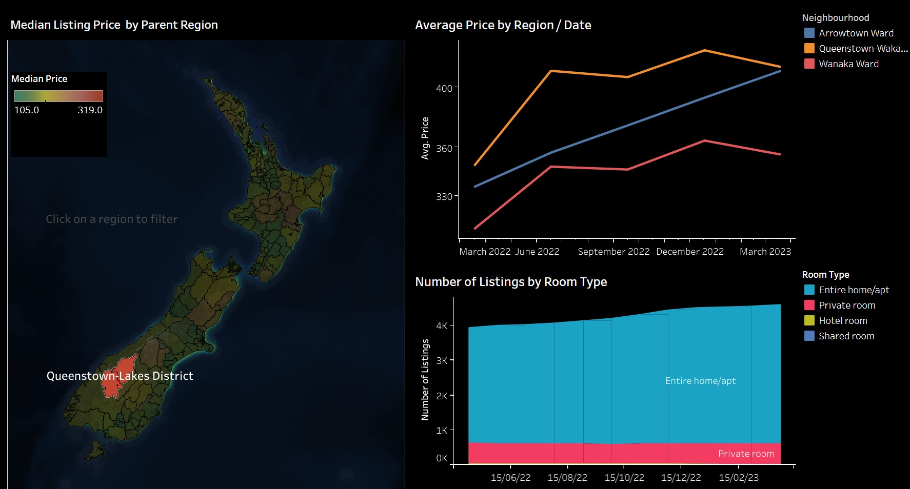
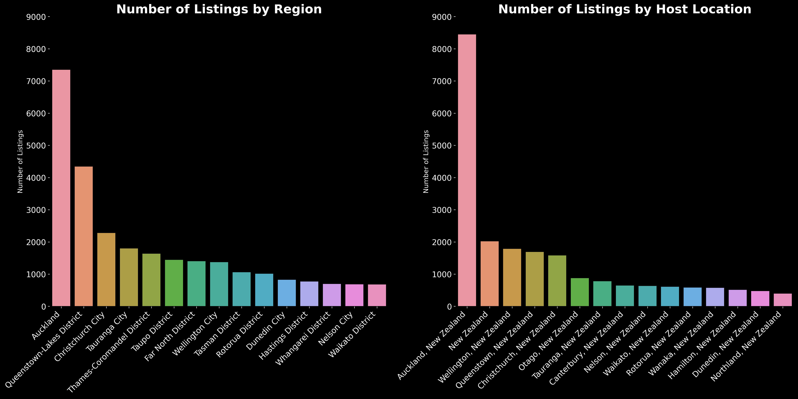
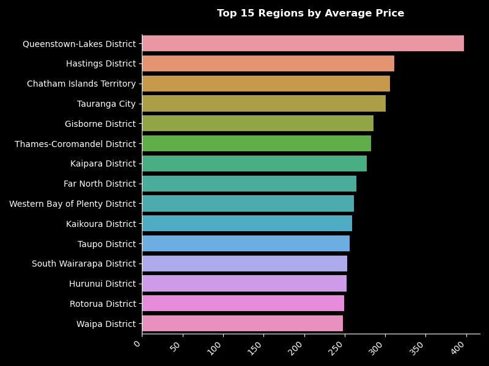

The goal for this project was to analyze Airbnb New Zealand data to better understand the market and provide actionable insights for both customers and hosts of Airbnb in New Zealand. The findings could help hosts optimize their listings and assist customers in making informed booking decisions. The analysis is split into two parts:
In this section I looked at data from April 2022 to April 2024 to visualize the distribution of Airbnb listings throughout New Zealand and understand how the price, type of listing and earnings for different regions varied throughout the year.
The results of my analysis can be viewed in an interactive dashboard created with Tableau Public.
I analyzed a snapshot of listings data in December 2022, specifically comparing top holiday spots in New Zealand's North and South islands at summer's onset. Using Python, I evaluated data groups from each island's top five destinations, focusing on these questions:
The datasets were obtained from Inside Airbnb, an open source data scraping project which catalogs all publicly available data from the official Airbnb Website. Inside Airbnb is not officially affiliated with Airbnb and is described on its website as a ‘mission driven project that provides data and advocacy about Airbnb's impact on residential communities.
The data for New Zealand is scraped approximately quarterly and each dataset represents a snapshot in time of all listings data. Each dataset contains wide data with as many as 80 columns including information on price, type of listing, host details, location coordinates and information derived from each listing’s booking calendar. For this project I utilized the publicly available data in the form of 8 CSV files from April 2022 up until April 2023 as well as some open GeoJson data on New Zealand territory boundaries for choropleth visualizations.
The data was merged, processed and cleaned using Python.
It goes without saying that the effects of Covid-19 in New Zealand would have significantly impacted the Airbnb market. The data showed a steady increase in the average prices of listings throughout 2022 and into 2023 for most regions. This is likely a result of the continued easing of restrictions and diminishing concerns imposed by the pandemic.
Unsurprisingly, Aucklanders dominate the Airbnb market, with Auckland having the largest number of listings. Proportionally, more hosts are from Auckland than there are listings in Auckland.
Looking at the top 15 regions by average price, Queenstown is more than $100 more expensive per night than the next most expensive region. Notably Auckland does not make the top 15.
The bulk of listings for both Islands are for 1-4 bedroom properties. Notably the South Island has a relatively larger proportion of single bedroom listings, while the North Island tended to have slightly more larger properties.
Price and reviews had fairly similar distributions for both the North and South Island groups, but there were fewer properties in the South Island with availability for booking following the three months starting from 11 December.
With the expception of very large listings (6 bedrooms or more), the South Island group had lower average availability across all property sizes. The difference was largest for 3-5 bedroom properties, where South Island listings had more than 25% fewer days availabile for booking compared to the North Island.
As one would expect, there was a positive relationship between price and number of bedrooms. Prices for listings in the South Island group were slightly higher on average, and there is some indication that the disparity in average prices increases with the size of the property. Listings with 6 or more bedrooms were on average 25% more expensive in the South Island compared with the North, although it is important to not that the sample size is small.
The average number of reviews per month and the implied occupancy rate decreased as the number of bedrooms got larger. The number of reviews per month were reasonably similar between the North and South Islands, with the exeption of listings with 6 or more bedrooms, where North Island listings almost doubled those in the South Island. This suggests to some extent that there is relatively higher demand for larger properties in the North Island.
Listings where the bedroom size was not specified received a relatively high number of reviews on average and they are priced similarly to 1-bedroom accomodations. Upon further investigation, the majority of these listings were found to be studios or niche accomodations such as guest suites, chalets and cabins.
In order to analyze what the features of a successful listing were, it was required to first define what a succesful listing is in the context of the data. I considered utilizing open data on median house prices in the region to estimate earnings/profit, but decided against it in order to avoid introducing additional bias/complexity to the analysis. I also wanted to focus on a metric that was relevant to both hosts and customers. The approach I decided on was to define a successful listing as one that received a high number of reviews per month where it was penalized for low review ratings. I created a new variable, review_metric, which was calculated as follows:
Plotting the review_metric against price and color coding by region, a negative and non-linear relationship is observed between price and listing success irrespective of region.
In order to understand the features that were associated with successful listings, I considered a number of machine learning methods. The fact that random forest models handle linear and non-linear relationships, are generally robust to outliers, work in regression settings, and implicitly perform feature selection to avoid multicollinearity through bootstrapping made model selection an easy decision as many of these characteristics were observed in the data.
Before running the model, significant preparation of the data was conducted in additional to the original cleaning. Enigneered features were added to the data including the time the listing has been active in days, the duration the host has been on airbnb (across all listings) and the number of amenities listed. Categorical variables were encoded, missing values were imputed using mean-imputation. The process of backwards elimination was used to elimate irellevant variables and the correlation matrices of the final variables used in the model are below.
Modelling the success of the listing for broad groups without incorporating the specific region each listing in proved to be challenging. Intuitively, the reviews per month that a listing would receive is likely be heavily dependent on the specific location of the listing. The objective was to identify and compare features of a successful listing in the North vs South islands and therefore specific location data was not incorporated into the model. The data for each group was split into a training and test set with a ratio of 80:20, and the model was trained on the test data and evaluated against the hold out set. With some feature engineering and tuning of hyperparameters using a grid search, the final model performance was as outlined below:
The results indicated that there was a considerable degree of overfitting of the training data, with relatively high training R square values and comparatively lower test values. The coefficients of determination of 0.463 and 0.433 for the North and South islands respectively do however suggest that a reasonable proportion of the variance in review_metric is explained by the model. While there are certainly improvements that can be made to improve model performance, creating a comprehensive machine learning mdoel was outside the scope of this project. If I were to continue with this model, I would need to further investigate outlier thresholds, feature selection, the treatment of categorical variables, and potentially transform the target variable.
The gini-importance coefficients for the model variables provide information on the features of successful listings. Based on the data, price was the most important factor for both islands but played a larger role in the North Island. The length of time that the listing had been up as well as the duration with which the host has been with Airbnb mattered more in the South Island. The host acceptance rate was a key feature in the North Island but had last impact in determining listing success in the South Island. The number of amenities listed was also a feature of note.